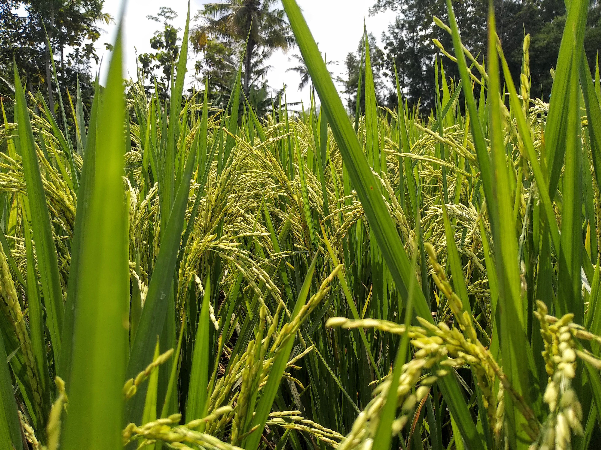

About Rice
Rice is a staple food for a significant portion of the world's population. It is a cereal grain that provides essential carbohydrates and nutrients. Rice can be found in various types, including long-grain, short-grain, and brown rice, each with its own culinary uses.
Steps to Grow Rice
- Choose a flooded field with rich, loamy soil.
- Prepare the field by plowing and leveling the land.
- Soak rice seeds in water for a day and then sow them in rows or broadcast them evenly.
- Keep the field flooded with water throughout the growing season, ensuring the water covers the plants but not entirely.
- Apply nitrogen-based fertilizers as needed to promote healthy growth.
- Control weeds and pests through proper management.
- Harvest rice when the grains turn golden and are firm to the touch.
Extra Information
Rice is a significant source of calories and provides important nutrients such as carbohydrates, protein, and vitamins. It is a dietary staple in many countries and is used in various dishes, including rice bowls, sushi, and risotto.